Toyako
Toyako · Hokkaido
Toyako
Highlighted on the Hokkaido map.
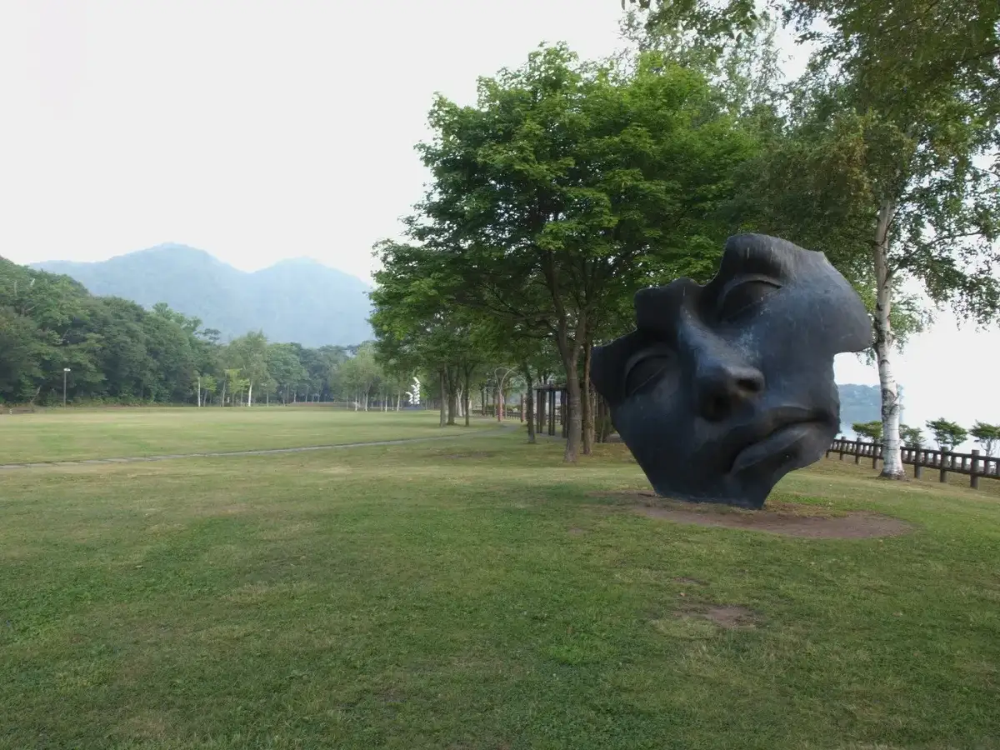
Stay
洞爺 Private Inn Kazu
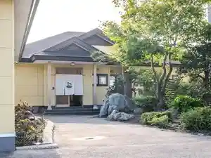
Touya Private Inn Kazu
西山高原 プチホテル恋泉 ＫＯＩＺＵＭＩ
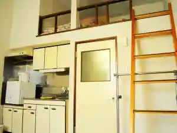
Nishiyama Kougen Puchihoteru Koi Izumi K O I Z U M I
ホテル プレミアム・レイク トーヤ
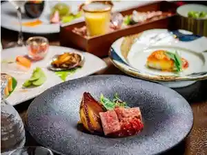
Hoteru Puremiamu Reiku Tooya
ザ・ウィンザーホテル洞爺 ヴィニェットコレクション by IHG
Za Uinzaahoteru Touya Viniettokorekushon By Ihg
湖畔の宿 湖嶋
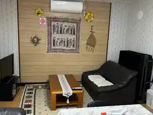
Kohan No Yado Mizuumi Shima
洞爺湖温泉 北海ホテル
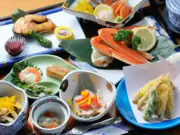
Touyako Onsen Hokkai Hoteru
ＴＨＥ ＴＯＹＡ
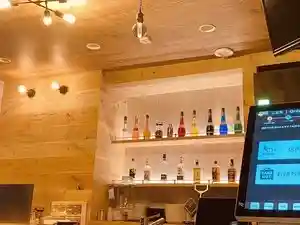
T H E T O Y A
ホテルグランドトーヤ
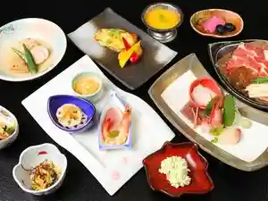
Hoterugurandotooya
グランヴィレッヂ洞爺 大和旅館アネックス
Guranvirejji Touya Yamato Ryokan Anekkusu
洞爺観光ホテル
Touya Kankou Hoteru
ザ レイクビュー ＴＯＹＡ 乃の風リゾート
Za Reikubyuu T O Y A No No Kaze Rizooto
ＴＯＹＡ Ｃｅｎｔｅｒ Ｖｉｌｌａｇｅ
T O Y A C E N T E R V I L L A G E
Dining
麺や 嵐
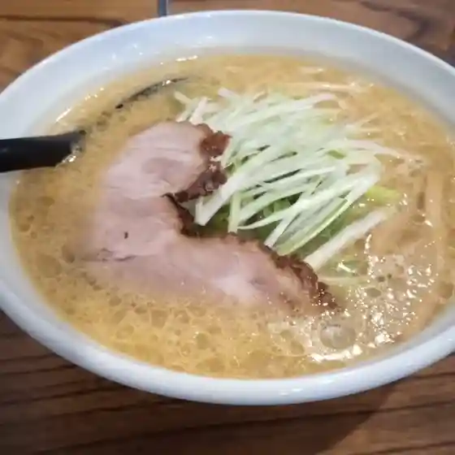
Men Ya Arashi
ウィンザー ポロバー
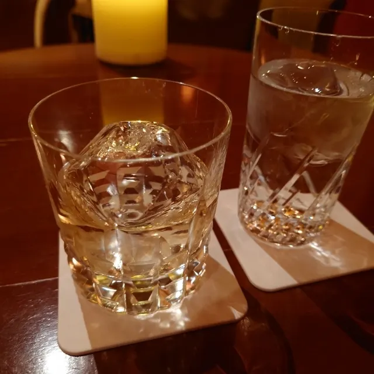
Uinzaa Porobaa
松よし旅館

Matsu Yoshi Ryokan
洞爺湖万世閣ホテルレイクサイドテラス 売店
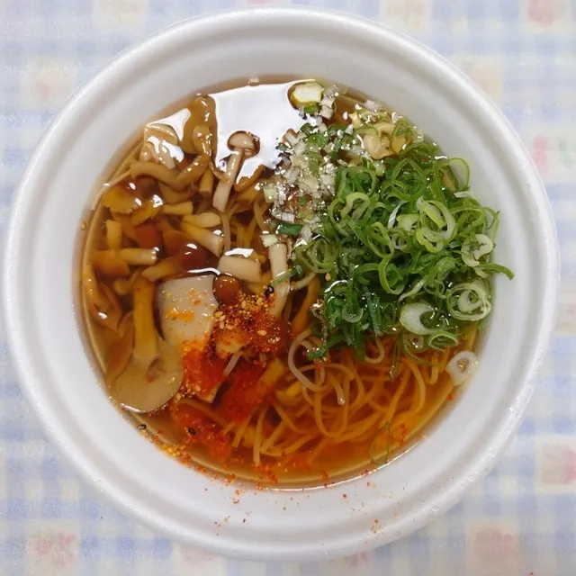
Touyako Bansei Kaku Hoterureikusaidoterasu Baiten
洋食屋Fuji
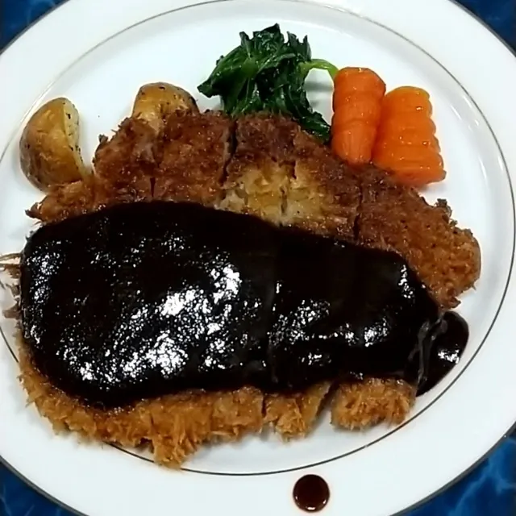
Youshoku Ya Fuji
祥庵 こげ津
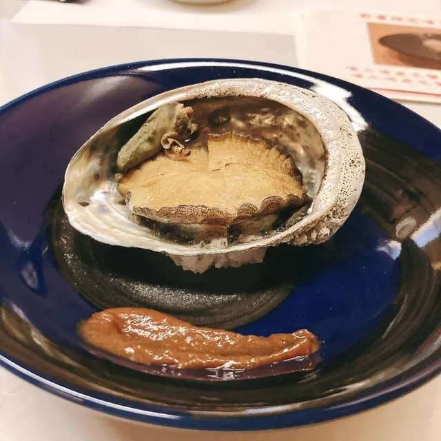
Shou Iori Koge Tsu
俺んち

Ore Nchi
牛助
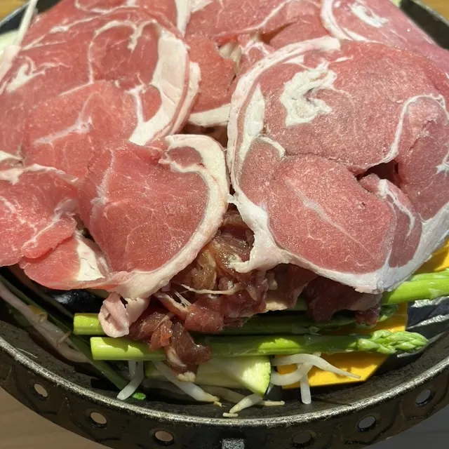
Ushisuke
ハイドゥン
Haidoun
くどう水産
Kudou Suisan
めん恋亭
Men Koi Tei
炭火ダイニング アペコロ
Sumibi Dainingu Apekoro
しまりすや
Shimarisuya
道の駅 あぷた レストラン
Michi No Eki Aputa Resutoran
焼肉てーる
Yakiniku Teeru
岡田屋
Okadaya
豐來軒
Yutaka Rai Ken
龍汰呼
Ryuu Ta Ko
湖の膳舎 なかむら
Mizuumi No Zen Sha Nakamura
中華食堂 青藍
Chuuka Shokudou Seiran
お肉屋さん たどころ
O Nikuya San Tadokoro
トウヤマルシェ
Touyamarushie
ブロッサム コーヒー
Burossamu Koohii
ブーランジュリー ウィンザー
Buuranjurii Uinzaa
Sights
Toya Lake Gurutto Chokoku Park
Toya Lake Gurutto Chokoku Park